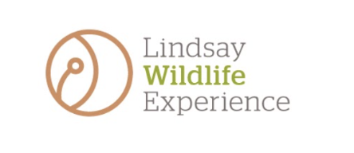
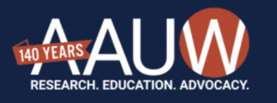
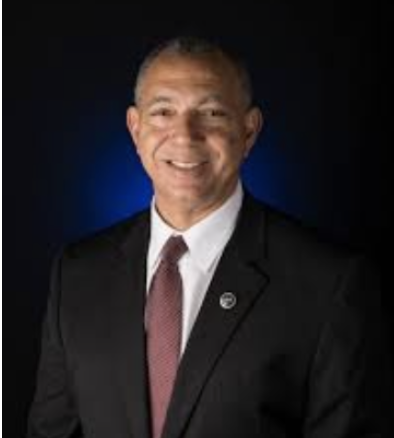
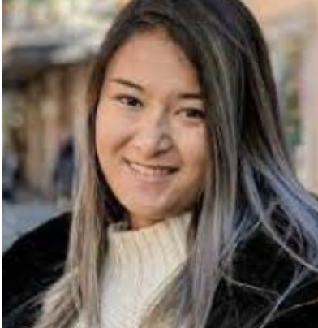
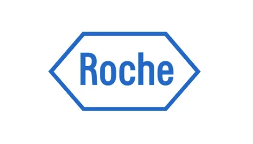
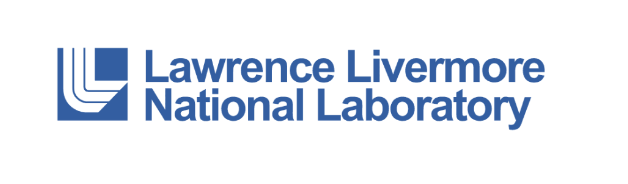

Internships and Volunteer Experience
Lindsay Wildlife Experience - Outstanding Wildlife Leader (OWL)

I have been an OWL, or Outstanding Wildlife Leader, since 2020. As an OWL, I have helped with public
education, animal husbandry, and data collection for a variety of native wildlife from California.
I volunteer at Lindsay wildlife every week and I help lead events for the public with a team of other
youth volunteers. I also help design curriculum that can be used to educate students about environmental
issues. I've also been looking at the intersection between technology and biology, specifically using
data applications to track populations of animals. Being an OWL has taught me leadership skills, as well
as the importance of our environment. The knowledge I have acquired has also motivated me to design
solutions in engineering that can help with local wildlife and environmental issues.
AAUW (Livermore-Pleasanton-Dublin) Volunteer

After being nominated for the Tech Trek Camp scholarship in 2019 for girls interested in STEM, I have
been volunteering at STEM events for young girls that are organized by the AAUW. I help teach younger
girls about the importance of science and develop their interest in different fields. This volunteering
opportunity has taught me to me how to communicate my experiences and knowledge to a younger audience
and uplift others.
Guest Speakers
Donald James (NASA)

On December 8, 2021, I had the incredible opportunity to hear Donald James talk about his 35 year
experience at NASA and his advice for high schoolers to be successful. Donald James worked in education
and public affairs, and before he retired, he was an Assistant Administrator for Education. He spent
most of his time at the NASA Ames Research Site as an educator. James talked about the incredible
history of NASA and its projects, such as the Orion Spacecraft, Mars Missions, and James Webb telescope.
In his early days, he was apprehensive about working at NASA because he had other passions, but after a
life-changing educational event and discussion with his father, he realized the importance and prestige
of his occupation. In 1996, when the Challenger Spacecraft exploded, NASA decided to educate the public
about what had happened. Working with diverse audiences across the country gave James a new vision of
education.
As his career progressed, he moved up in position and his boss was a high level marine general. At
this point in his life, James realized that it was not solely his intelligence that had allowed him to
prosper, but his focus on manners and kindness that his mother had taught him. He went on to write a
book, Manners Will Take You Where Brains and Money Won't. James emphasized the importance of finding
support, whether it's family or strangers, because you need honesty when you are struggling.
From this guest speaker event, I learned that success comes down to improvement and communication
paired with intelligence and hard work. You don't have to be a prodigy as a child, but throughout your
life, you should make an effort to grow, both intellectually and morally. Donald James inspired me to take
initiative as well because I have to show interviewers and employers that I am truly interested in
engineering. Moreover, people are more likely to value your work when you are respectful and willing to
make mistakes and hear criticism.
Kimberli Zhong (MIT)

My second influential guest speaker was Kimberli Zhong, an DEDA and MIT alumni who now works at an
autonomous vehicle company. Zhong started off with her high school experience and how she was already an
excelling student who was on top of things since her freshman year. SHe was a member of the first
graduating class of DEDA and started the Gael Force Robotics Club, and this was interesting to me
because I am a part of both of these groups. She graduated from DHS in 2014 to study computer science at
MIT, which is incredible, and she currently works in a startup today. She was always good at math and
science, although she was only exposed to engineering in high school, and she cultivated her passion for
STEM through robotics. Zhong made it clear that a critical aspect was the secondary outlets for energy
and club culture because it allowed her to work her way up to world championship tiers of robotics. In
high school, her primary exposure to programming was through clubs and engineering classes, and her
personal experiences with coding with robots and raspberry pi.
Although DHS is different now, Zhong’s description of her high school years was inspiring because it
revealed how much initiative she took and how anyone could get better at something by getting involved
with the groups in their community. The theme of club culture was relevant throughout Zhong’s life because
when she went to MIT for STEM, her main connections were found through clubs, like HACKMIT. She discussed
how rigorous and CS-heavy her courses were, as well as competitive, and how she was able to get through
them because of her passion. She then began to pursue more research positions in grad school by reaching
out to a lab and becoming a full time TA. Zhong’s presentation was memorable because throughout her life,
she learned to set personal deadlines and constantly push herself.
Zhong made it clear that the most impactful part of college was having fun and making sacrifices for
fun. College is about exploring and having the freedom to try things out, so it was essentially a stepping
stone in her life. She quickly learned that she disliked research and began to look at startups. In her
post-college life, she works at a startup called Applied Intuition that is now a billion dollar company
that develops safer autonomous vehicles. Because she works closely with robots, Zhong feels that her
experiences at DHS really did prepare her for her STEM career. Her presentation was useful because she
also described her experiences as a woman in STEM and how it was always a challenge, but she found subtle
ways to assert herself.
Field Trips
Roche Field Trip (Virtual)

During the Roche Virtual Field Trip, I got to meet a number of industry professionals who talked about
their backgrounds and the importance of their work at Roche. Roche is a biotech company from Santa Clara
that specializes in pharmaceuticals and diagnostics. Their diagnostics include molecular testing, clinical
chemistry, patient salve testing, next generation sequencing, and lab IT. I participated in a coding
workshop that taught me about AI, led by Franklin Ventura, a biomedical and software engineer in research
and early development. To simulate something similar to what he does, we used an online simulator to create
a piece of AI that used visual recognition to identify certain poses we made. It was similar to how
researchers use python in research groups for digital pathology solutions to look at tissue and visualize
patient samples. Although this was a simple demo, it was very informative because it truly demonstrated how
far pathology has come and the significant applications of technology in medicine, like detecting cancer.
There are an increasing number of cancer patients, which generates petabytes of data yearly, and there is a
need to handle the data when there are fewer pathologists. The process requires automation when looking at
biopsies to increase accuracy.
Then, as a group, we met a diverse group of staff at Roche, some who worked more with more technology and
others biology. One of the researchers who stood out to me was Alissa, who was a new employee working at
Roche. She had just graduated college in 2020 and she helped with verifying and validating the new Ultra
Plus product by running numerous tests. I was amazed how she went from having a restaurant job to working at
Roche because she was passionate about cancer diagnostics and able to combine her abilities in technology to
her interests. She talked about her career path and how she focused on molecular biology while ensuring that
she was familiar with computer science as well because as biology progresses, there will be more technology
required. This aspect of the field trip was memorable because it was very inspiring to hear a younger
employee’s career experience. She talked about her fears as a young person as well as her interests, and
personally, it motivated me to cultivate my passions more.
Livermore Labs Tour (Virtual)

In my POE class, I participated in the Lawerence Livermore Lab virtual field trip. LLL was established in
1952 and it is 1 of the 17 Department of Energy Laboratories. They focus on experimental testing and “big”
science in teams for the interest of the nation, so they have employees who work in many fields of STEM. One
of their key facilities is the National Ignition Facility, and it uses supercompiters to learn about high
energy situations, like stars and nuclear fusion. Arsenia Rendon, a software developer who controls laser
configurations, gave a virtual tour to show our class what a laser looks like in certain situations. The NIF
is a massive facility with the highest energy lasers in the world and a computer system that operates a 192
laser system. Scientists in NIF try to understand nuclear fusion and recreate processes that start to
produce energy. Their primary objectives, according to Rendon, are to maintain a nuclear stock-pile, explore
nuclear fusion and cleaner energy, and understand what our universe is made of.
Rendon went in depth about
the processes, describing how they take lasers and converge them into capsules to target a small, carefully
engineered target. She made it clear that most of the time, they are collecting data and formulating the
best scenarios with computers as opposed to testing because it is a complex process. Lasers are used to find
a target, for diagnostic materials, and optics. We were shown around the area with lasers and where the
supercomputers are in NIF, which was very inspiring because it is such a complex facility. Rendon talked
about how she majored in business and felt very inexperienced upon arriving at NIF, but she soon began to
specialize in software development and she is a key employee in her department. She works specifically with
the high-performance machines that are used for calculations and processing data from test trials, like the
Dante diagnostic. She also went in depth about KDP crystals that use laser glass to amp up energy and create
streamlined beams that are filtered to produce energy, as well as diagnostic aid. Overall, learning about
this massive, complex facility close to home was memorable and inspiring because LLL uses people from all
fields to do their work. I’ve always wanted to learn about what local lab facilities do to improve the
nation and combat our energy problem, and this was quitee eye-opening. Rendon’s story was also motivational
because it does not truly matter what you study because if you are able to apply it and have an openness to
learn about new areas, you can work in a setting as complex as the NIF.